Batch and Momentum¶
约 6643 个字 预计阅读时间 22 分钟
Review： Optimization with Batch¶
上次我们有讲说，我们实际上在算微分的时候，并不是真的对所有 Data 算出来的 L 作微分，你是把所有的 Data 分成一个一个的 Batch，有的人是叫Mini Batch ，那我这边叫做 Batch，其实指的是一样的东西，助教投影片里面，是写 Mini Batch
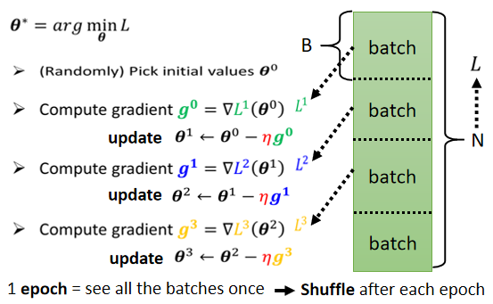
每一个 Batch 的大小呢，就是大 B 一笔的资料，我们每次在 Update 参数的时候，我们是拿大 B 一笔资料出来，算个 Loss，算个 Gradient，Update 参数，拿另外B一笔资料，再算个 Loss，再算个 Gradient，再 Update 参数，以此类推，所以我们不会拿所有的资料一起去算出 Loss，我们只会拿一个 Batch 的资料，拿出来算 Loss
所有的 Batch 看过一遍，叫做一个 Epoch，那事实上啊，你今天在做这些 Batch 的时候，你会做一件事情叫做 Shuffle
Shuffle 有很多不同的做法，但一个常见的做法就是，在每一个 Epoch 开始之前，会分一次 Batch，然后呢，每一个 Epoch 的 Batch 都不一样，就是第一个 Epoch，我们分这样子的 Batch，第二个 Epoch，会重新再分一次 Batch，所以哪些资料在同一个 Batch 里面，每一个 Epoch 都不一样的这件事情，叫做 Shuffle。
Small Batch v.s. Large Batch¶
我们先解释为什么要用 Batch，再说 Batch 对 Training 带来了什么样的帮助。
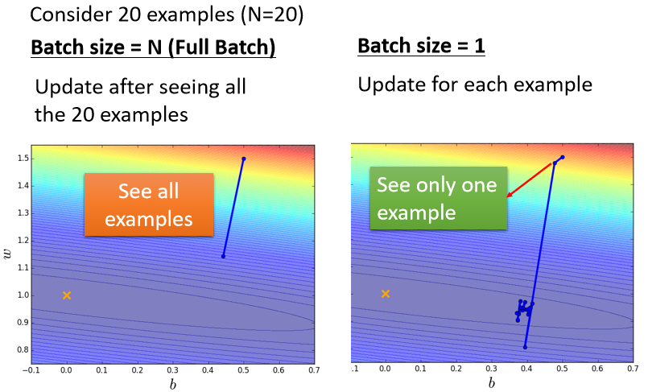
我们来比较左右两边这两个 Case，那假设现在我们有20笔训练资料
- 左边的 Case 就是没有用 Batch，Batch Size，直接设的跟我训练资料一样多，这种状况叫做 Full Batch，就是没有用 Batch 的意思
- 那右边的 Case 就是，Batch Size 等于1
这是两个最极端的状况
我们先来看左边的 Case，在左边 Case 里面，因为没有用 Batch，我们的 Model 必须把20笔训练资料都看完，才能够计算 Loss，才能够计算 Gradient，所以我们必须要把所有20笔 Example s 都看完以后，我们的参数才能够 Update 一次。就假设开始的地方在上边边，把所有资料都看完以后，Update 参数就从这里移动到下边。
如果 Batch Size 等于1的话，代表我们只需要拿一笔资料出来算 Loss，我们就可以 Update 我们的参数，所以每次我们 Update 参数的时候，看一笔资料就好，所以我们开始的点在这边，看一笔资料 就 Update 一次参数，再看一笔资料 就 Update 一次参数，如果今天总共有20笔资料的话 那在每一个 Epoch 里面，我们的参数会 Update 20次，那不过，因为我们现在是只看一笔资料，就 Update 一次参数，所以用一笔资料算出来的 Loss，显然是比较 Noisy 的，所以我们今天 Update 的方向，你会发现它是曲曲折折的
所以如果我们比较左边跟右边，哪一个比较好呢，他们有什么差别呢？
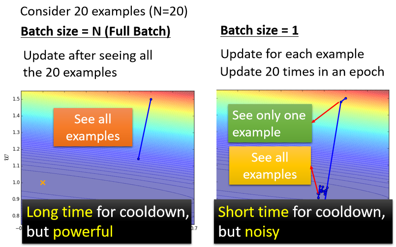
你会发现左边没有用 Batch 的方式，它蓄力的时间比较长，还有它技能冷却的时间比较长，你要把所有的资料都看过一遍，才能够 Update 一次参数
而右边的这个方法，Batch Size 等于1的时候，蓄力的时间比较短，每次看到一笔参数，每次看到一笔资料，你就会更新一次你的参数
所以今天假设有20笔资料，看完所有资料看过一遍，你已经更新了20次的参数，但是左边这样子的方法有一个优点，就是它这一步走的是稳的，那右边这个方法它的缺点，就是它每一步走的是不稳的
看起来左边的方法跟右边的方法，他们各自都有擅长跟不擅长的东西，左边是蓄力时间长，但是威力比较大，右边技能冷却时间短，但是它是比较不准的，看起来各自有各自的优缺点，但是你会觉得说，左边的方法技能冷却时间长，右边的方法技能冷却时间短，那只是你没有考虑并行运算的问题。
实际上考虑并行运算的话，左边这个并不一定时间比较长
batch size较大并不一定需要更多的时间去计算梯度¶
这边是真正的实验结果了，事实上，比较大的 Batch Size，你要算 Loss，再进而算 Gradient，所需要的时间，不一定比小的 Batch Size 要花的时间长
那以下是做在一个叫做 MNIST 上面，MNIST(Mixed National Institute of Standards and Technology database)是美国国家标准与技术研究院收集整理的大型手写数字数据库，机器要做的事情，就是给它一张图片，然后判断这张图片，是0到9的哪一个数字，它要做数字的分类，那 MNIST 呢 是机器学习的helloworld，就是假设你今天，从来没有做过机器学习的任务，一般大家第一个会尝试的机器学习的任务，往往就是做 MNIST 做手写数字辨识，
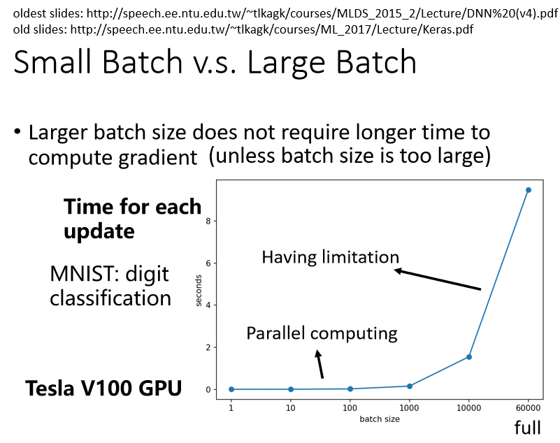
这边我们就是做了一个实验，我们想要知道说，给机器一个 Batch，它要计算出 Gradient，进而 Update 参数，到底需要花多少的时间
这边列出了 Batch Size 等于1 等于10，等于100 等于1000 所需要耗费的时间
你会发现说 Batch Size 从1到1000，需要耗费的时间几乎是一样的，你可能直觉上认为有1000笔资料，那需要计算 Loss，然后计算 Gradient，花的时间不会是一笔资料的1000倍吗，但是实际上并不是这样的
因为在实际上做运算的时候，我们有 GPU，可以做并行运算，是因为你可以做平行运算的关系，这1000笔资料是平行处理的，所以1000笔资料所花的时间，并不是一笔资料的1000倍，当然 GPU 平行运算的能力还是有它的极限，当你的 Batch Size 真的非常非常巨大的时候，GPU 在跑完一个 Batch，计算出 Gradient 所花费的时间，还是会随着 Batch Size 的增加，而逐渐增长
所以今天如果 Batch Size 是从1到1000，所需要的时间几乎是一样的，但是当你的 Batch Size 增加到 10000，乃至增加到60000的时候，你就会发现 GPU 要算完一个 Batch，把这个 Batch 里面的资料都拿出来算 Loss，再进而算 Gradient，所要耗费的时间，确实有随着 Batch Size 的增加而逐渐增长，但你会发现这边用的是 V100，所以它挺厉害的，给它60000笔资料，一个 Batch 里面，塞了60000笔资料，它在10秒钟之内，也是把 Gradient 就算出来
batch size较小可能需要更多的时间来完成一个epoch¶
所以 GPU 虽然有平行运算的能力，但它平行运算能力终究是有个极限，所以你 Batch Size 真的很大的时候，时间还是会增加的
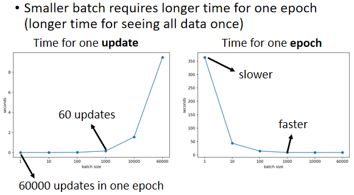
但是因为有平行运算的能力，因此实际上，当你的 Batch Size 小的时候，你要跑完一个 Epoch，花的时间是比大的 Batch Size 还要多的，怎么说呢
如果今天假设我们的训练资料只有60000笔，那 Batch Size 设1，那你要60000个 Update 才能跑完一个 Epoch，如果今天是 Batch Size 等于1000，你要60个 Update 才能跑完一个 Epoch，假设今天一个 Batch Size 等于1000，要算 Gradient 的时间根本差不多，那60000次 Update，跟60次 Update 比起来，它的时间的差距量就非常可观了
所以左边这个图是 Update 一次参数，拿一个 Batch 出来计算一个 Gradient，Update 一次参数所需要的时间，右边这个图是，跑完一个完整的 Epoch，需要花的时间，你会发现左边的图跟右边的图，它的趋势正好是相反的，假设你 Batch Size 这个1，跑完一个 Epoch，你要 Update 60000次参数，它的时间是非常可观的，但是假设你的 Batch Size 是1000，你只要跑60次，Update 60次参数就会跑完一个 Epoch，所以你跑完一个 Epoch，看完所有资料的时间，如果你的 Batch Size 设1000，其实是比较短的，Batch Size 设1000的时候，把所有的资料看过一遍，其实是比 Batch Size 设1 还要更快
所以如果我们看右边这个图的话，看完一个 Batch，把所有的资料看过一次这件事情，大的 Batch Size 反而是较有效率的，是不是跟你直觉想的不太一样
在没有考虑平行运算的时候，你觉得大的 Batch 比较慢，但实际上，在有考虑平行运算的时候，一个 Epoch 大的 Batch 花的时间反而是比较少的
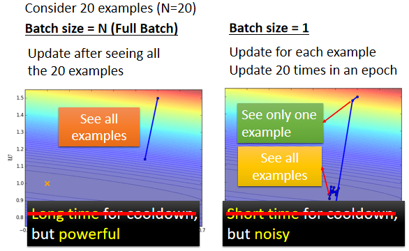
我们如果要比较这个 Batch Size 大小的差异的话，看起来直接用技能时间冷却的长短，并不是一个精确的描述，看起来在技能时间上面，大的 Batch 并没有比较吃亏，甚至还占到优势了.
所以事实上，20笔资料 Update 一次的时间，跟右边看一笔资料 Update 一次的时间，如果你用 GPU 的话，其实可能根本就是所以一样的，所以大的 Batch，它的技能时间，它技能冷却的时间，并没有比较长，那所以这时候你可能就会说，欸 那个大的 Batch 的劣势消失了，那难道它真的就，那这样看起来大的 Batch 应该比较好?
你不是说大的 Batch，这个 Update 比较稳定，小的 Batch，它的 Gradient 的方向比较 Noisy 吗，那这样看起来，大的 Batch 好像应该比较好哦，小的 Batch 应该比较差，因为现在大的 Batch 的劣势已经，因为平行运算的时间被拿掉了，它好像只剩下优势而已。
那神奇的地方是 Noisy 的 Gradient，反而可以帮助 Training，这个也是跟直觉正好相反的
如果你今天拿不同的 Batch 来训练你的模型，你可能会得到这样子的结果，左边是做在 MNIST 上，右边是做在 CIFAR-10 上，不管是 MNIST 还是 CIFAR-10，都是影像辨识的问题
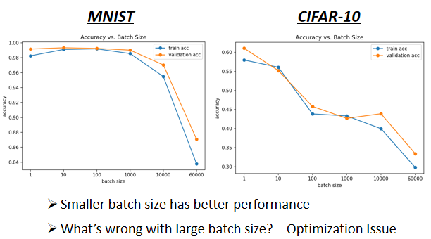
- 横轴代表的是 Batch Size，从左到右越来越大
- 纵轴代表的是正确率，越上面正确率越高，当然正确率越高越好
而如果你今天看 Validation Acc 上的结果，会发现说，Batch Size 越大，Validation Acc 上的结果越差，但这个不是 Overfitting，因为如果你看你的 Training 的话，会发现说 Batch Size 越大，Training 的结果也是越差的，而我们现在用的是同一个模型哦，照理说，它们可以表示的 Function 就是一模一样的
但是神奇的事情是，大的 Batch Size，往往在 Training 的时候，会给你带来比较差的结果
所以这个是什么样的问题，同样的 Model，所以这个不是 Model Bias 的问题，这个是 Optimization 的问题，代表当你用大的 Batch Size 的时候，你的 Optimization 可能会有问题，小的 Batch Size，Optimization 的结果反而是比较好的，为什么会这样子呢
“Noisy” update is better for training¶
为什么小的 Batch Size，在 Training Set 上会得到比较好的结果，为什么 Noisy 的 Update，Noisy 的 Gradient 会在 Training 的时候，给我们比较好的结果呢？一个可能的解释是这样子的
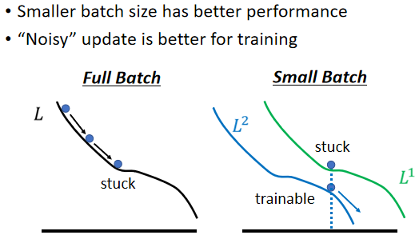
假设你是 Full Batch，那你今天在 Update 你的参数的时候，你就是沿著一个 Loss Function 来 Update 参数，今天 Update 参数的时候走到一个 Local Minima，走到一个 Saddle Point，显然就停下来了，Gradient 是零，如果你不特别去看Hession的话，那你用 Gradient Descent 的方法，你就没有办法再更新你的参数了
但是假如是 Small Batch 的话，因为我们每次是挑一个 Batch 出来，算它的 Loss，所以等于是，等于你每一次 Update 你的参数的时候，你用的 Loss Function 都是越有差异的，你选到第一个 Batch 的时候，你是用 L1 来算你的 Gradient，你选到第二个 Batch 的时候，你是用 L2 来算你的 Gradient，假设你用 L1 算 Gradient 的时候，发现 Gradient 是零，卡住了，但 L2 它的 Function 跟 L1 又不一样，L2 就不一定会卡住，所以 L1 卡住了 没关系，换下一个 Batch 来，L2 再算 Gradient。
你还是有办法 Training 你的 Model，还是有办法让你的 Loss 变小，所以今天这种 Noisy 的 Update 的方式，结果反而对 Training，其实是有帮助的。
“Noisy” update is better for generalization¶
那这边还有另外一个更神奇的事情，其实小的 Batch 也对 Testing 有帮助。
假设我们今天在 Training 的时候，都不管是大的 Batch 还小的 Batch，都 Training 到一样好，刚才的 Case是Training 的时候就已经 Training 不好了
假设你有一些方法，你努力的调大的 Batch 的 Learning Rate，然后想办法把大的 Batch，跟小的 Batch Training 得一样好，结果你会发现小的 Batch，居然在 Testing 的时候会是比较好的，那以下这个实验结果是引用自，On Large-Batch Training For Deep Learning，Generalization Gap And Sharp Minima https://arxiv.org/abs/1609.04836 这篇 Paper 的实验结果
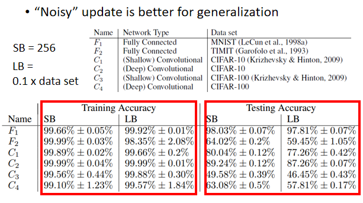
那这篇 Paper 里面，作者 Train 了六个 Network 里面有 CNN 的，有 Fully Connected Network 的，做在不同的 Cover 上，来代表这个实验是很泛用的，在很多不同的 Case 都观察到一样的结果，那它有小的 Batch，一个 Batch 里面有256笔 Example，大的 Batch 就是那个 Data Set 乘 0.1，Data Set 乘 0.1，Data Set 有60000笔，那你就是一个 Batch 里面有6000笔资料
然后他想办法，在大的 Batch 跟小的 Batch，都 Train 到差不多的 Training 的 Accuracy，所以刚才我们看到的结果是，Batch Size 大的时候，Training Accuracy 就已经差掉了，这边不是想办法 Train 到大的 Batch 的时候，Training Accuracy 跟小的 Batch，其实是差不多的
但是就算是在 Training 的时候结果差不多，Testing 的时候你还是看到了，大的 Batch 居然比小的 Batch 差，Training 的时候都很好，Testing 的时候大的 Batch 差，代表 Over Fitting，这个才是 Over Fitting 对不对，好 那为什么会有这样子的现象呢？在这篇文章里面也给出了一个解释，
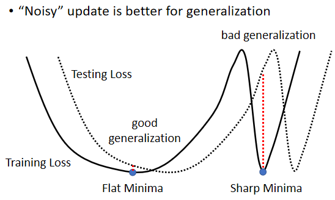
假设这个是我们的 Training Loss，那在这个 Training Loss 上面呢，可能有很多个 Local Minima，有不只一个 Local Minima，那这些 Local Minima 它们的 Loss 都很低，它们 Loss 可能都趋近于 0，但是这个 Local Minima，还是有好 Minima 跟坏 Minima 之分
如果一个 Local Minima 它在一个峡谷里面，它是坏的 Minima，然后它在一个平原上，它是好的 Minima，为什么会有这样的差异呢
- 因为假设现在 Training 跟 Testing 中间，有一个 Mismatch，Training 的 Loss 跟 Testing 的 Loss，它们那个 Function 不一样，有可能是本来你 Training 跟 Testing 的 Distribution就不一样。
- 那也有可能是因为 Training 跟 Testing，你都是从 Sample 的 Data 算出来的，也许 Training 跟 Testing，Sample 到的 Data 不一样，那所以它们算出来的 Loss，当然是有一点差距。
那我们就假设说这个 Training 跟 Testing，它的差距就是把 Training 的 Loss，这个 Function 往右平移一点，这时候你会发现，对左边这个在一个盆地里面的 Minima 来说，它的在 Training 跟 Testing 上面的结果，不会差太多，只差了一点点，但是对右边这个在峡谷里面的 Minima 来说，一差就可以天差地远
它在这个 Training Set 上，算出来的 Loss 很低，但是因为 Training 跟 Testing 之间的不一样，所以 Testing 的时候，这个 Error Surface 一变，它算出来的 Loss 就变得很大，而很多人相信这个大的 Batch Size，会让我们倾向于走到峡谷里面，而小的 Batch Size，倾向于让我们走到盆地里面
那他直觉上的想法是这样，就是小的 Batch，它有很多的 Loss，它每次 Update 的方向都不太一样，所以如果今天这个峡谷非常地窄，它可能一个不小心就跳出去了，因为每次 Update 的方向都不太一样，它的 Update 的方向也就随机性，所以一个很小的峡谷，没有办法困住小的 Batch
如果峡谷很小，它可能动一下就跳出去，之后停下来如果有一个非常宽的盆地，它才会停下来，那对于大的 Batch Size，反正它就是顺著规定 Update，然后它就很有可能，走到一个比较小的峡谷里面
但这只是一个解释，那也不是每个人都相信这个解释，那这个其实还是一个尚待研究的问题
那这边就是比较了一下，大的 Batch 跟小的 Batch
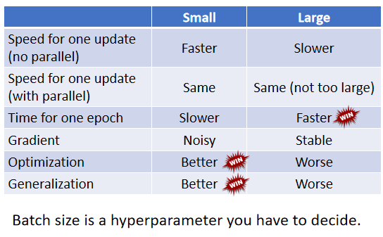
左边这个是第一个 Column 是小的 Batch，第二个 Column 是大的 Batch
在有平行运算的情况下，小的 Batch 跟大的 Batch，其实运算的时间并没有太大的差距，除非你的大的 Batch 那个大是真的非常大，才会显示出差距来。但是一个 Epoch 需要的时间，小的 Batch 比较长，大的 Batch 反而是比较快的，所以从一个 Epoch 需要的时间来看，大的 Batch 其实是占到优势的。
而小的 Batch，你会 Update 的方向比较 Noisy，大的 Batch Update 的方向比较稳定，但是 Noisy 的 Update 的方向，反而在 Optimization 的时候会占到优势，而且在 Testing 的时候也会占到优势，所以大的 Batch 跟小的 Batch，它们各自有它们擅长的地方
所以 Batch Size，变成另外一个 你需要去调整的 Hyperparameter。
那我们能不能够鱼与熊掌兼得呢，我们能不能够截取大的 Batch 的优点，跟小的 Batch 的优点，我们用大的 Batch Size 来做训练，用平行运算的能力来增加训练的效率，但是训练出来的结果同时又得到好的结果呢，又得到好的训练结果呢。
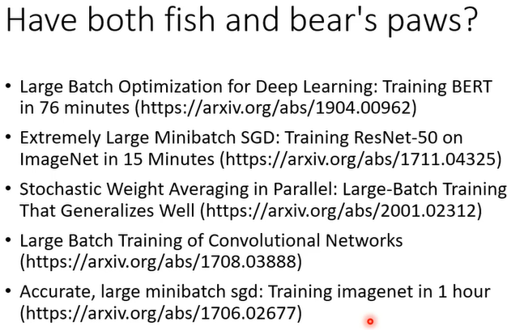
这是有可能的，有很多文章都在探讨这个问题，那今天我们就不细讲，我们把这些 Reference 列在这边给大家参考，那你发现这些 Paper，往往它想要做的事情都是什么，哇 76分钟 Train BERT，15分钟 Train ResNet，一分钟 Train Imagenet 等等，这为什么他们可以做到那么快，就是因为他们 Batch Size 是真的开很大，比如说在第一篇 Paper 里面，Batch Size 里面有三万笔 Example 这样，Batch Size 开很大，Batch Size 开大 真的就可以算很快，你可以在很短的时间内看到大量的资料，那他们需要有一些特别的方法来解决，Batch Size 可能会带来的劣势。
Momentum¶
Momentum，这也是另外一个，有可能可以对抗 Saddle Point，或 Local Minima 的技术，Momentum 的运作是这个样子的
Small Gradient¶
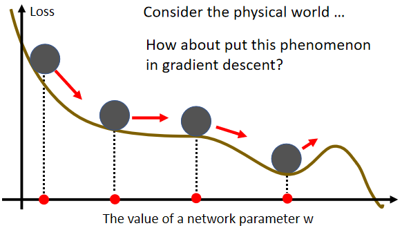
它的概念，你可以想象成在物理的世界里面，假设 Error Surface 就是真正的斜坡，而我们的参数是一个球，你把球从斜坡上滚下来，如果今天是 Gradient Descent，它走到 Local Minima 就停住了，走到 Saddle Point 就停住了
但是在物理的世界里，一个球如果从高处滚下来，从高处滚下来就算滚到 Saddle Point，如果有惯性，它从左边滚下来，因为惯性的关系它还是会继续往右走，甚至它走到一个 Local Minima，如果今天它的动量够大的话，它还是会继续往右走，甚至翻过这个小坡然后继续往右走
那所以今天在物理的世界里面，一个球从高处滚下来的时候，它并不会被 Saddle Point，或 Local Minima卡住，不一定会被 Saddle Point，或 Local Minima 卡住，我们有没有办法运用这样子的概念，到 Gradient Descent 里面呢，那这个就是我们等一下要讲的，Momentum 这个技术。
Vanilla Gradient Descent¶
那我们先很快的复习一下，原来的 Gradient Descent 长得是什么样子，这个是 Vanilla 的 Gradient Descent，Vanilla 的意思就是一般的的意思，它直译是香草的，但就其实是一般的，一般的 Gradient Descent 长什么样子呢
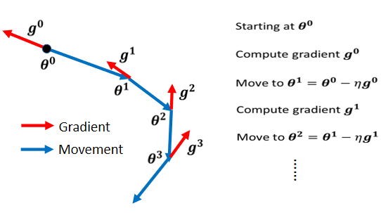
一般的 Gradient Descent 是说，我们有一个初始的参数叫做 \(θ^0\)，我们计算一下 Gradient，然后计算完这个 Gradient 以后呢，我们往 Gradient 的反方向去 Update 参数 $$ θ^1 = θ^0 - {\eta}g^0 $$ 我们到了新的参数以后，再计算一次 Gradient，再往 Gradient 的反方向，再 Update 一次参数，到了新的位置以后再计算一次 Gradient，再往 Gradient 的反方向去 Update 参数，这个 Process 就一直这样子下去
Gradient Descent + Momentum¶
加上 Momentum 以后，每一次我们在移动我们的参数的时候，我们不是只往 Gradient 的反方向来移动参数，我们是 Gradient 的反方向加上前一步移动的方向，两者加起来的结果，去调整去到我们的参数，
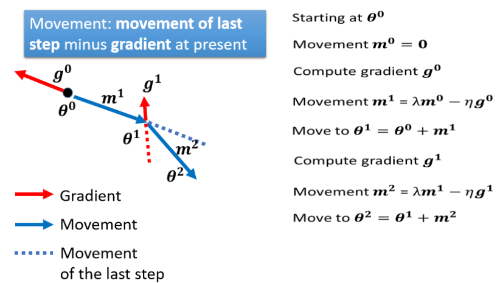
那具体说起来是这个样子，一样找一个初始的参数，然后我们假设前一步的参数的 Update 量呢，就设为 0 $$ m^0 = 0 $$ 接下来在 \(θ^0\) 的地方，计算 Gradient 的方向\(g^0\)
然后接下来你要决定下一步要怎么走，它是 Gradient 的方向加上前一步的方向，不过因为前一步正好是 0，现在是刚初始的时候所以前一步是 0，所以 Update 的方向，跟原来的 Gradient Descent 是一样的，这没有什么有趣的地方 $$ m^1 = {\lambda}m0-{\eta}g0\\ θ^1 = θ^0 + m^1 $$ 但从第二步开始，有加上 Momentum 以后就不太一样了，从第二步开始，我们计算 \(g^1\)，然后接下来我们 Update 的方向，不是 \(g^1\)的反方向，而是根据上一次 Update 方向，也就是 m1 减掉 g1，当做我们新的 Update 的方向，这边写成 m2 $$ m^2 = {\lambda}m1-{\eta}g1 $$ 那我们就看下面这个图
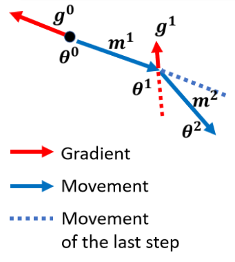
g1 告诉我们，Gradient 告诉我们要往红色反方向这边走，但是我们不是只听 Gradient 的话，加上 Momentum 以后，我们不是只根据 Gradient 的反方向，来调整我们的参数，我们也会看前一次 Update 的方向
- 如果前一次说要往\(m^1\)蓝色及蓝色虚线这个方向走
- Gradient 说要往红色反方向这个方向走
- 把两者相加起来，走两者的折中，也就是往蓝色\(m^2\)这一个方向走，所以我们就移动了 m2，走到 θ2 这个地方
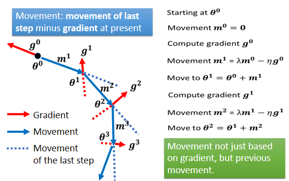
接下来就反复进行同样的过程，在这个位置我们计算出 Gradient，但我们不是只根据 Gradient 反方向走，我们看前一步怎么走，前一步走这个方向，走这个蓝色虚线的方向，我们把蓝色的虚线加红色的虚线，前一步指示的方向跟 Gradient 指示的方向，当做我们下一步要移动的方向
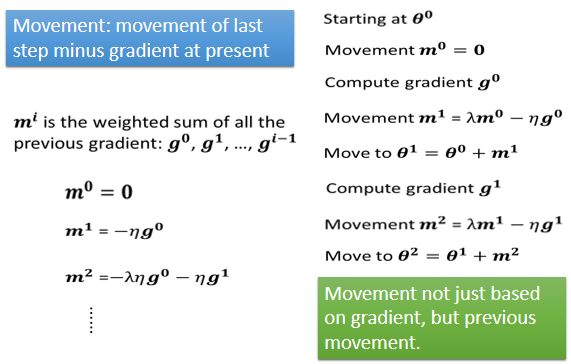
每一步的移动，我们都用 m 来表示，那这个 m 其实可以写成之前所有算出来的，Gradient 的 Weighted Sum。从右边的这个式子，其实就可以轻易的看出来 $$ m^0 = 0\\ m^1 = -{\eta}g^0\\ m^2 = -{\lambda}{\eta}g0-{\eta}g1\\ ... $$ m0 我们把它设为 0，m1 是 m0 减掉 g0，m0 为 0，所以 m1 就是 g0 乘上负的 η，m2 是 λ 乘上 m1，λ 就是另外一个参数，就好像 η 是 Learning Rate 我们要调，λ 是另外一个参数，这个也是需要调的，m2 等于 λ 乘上 m1，减掉 η 乘上 g1，然后 m1 在哪里呢，m1 在这边，你把 m1 代进来，就知道说 m2，等于负的 λ 乘上 η 乘以 g0，减掉 η 乘上 g1，它是 g0 跟 g1 的 Weighted Sum
以此类推，所以你会发现说，现在这个加上 Momentum 以后，一个解读是 Momentum 是，Gradient 的负反方向加上前一次移动的方向，那但另外一个解读方式是，所谓的 Momentum，当加上 Momentum 的时候，我们 Update 的方向，不是只考虑现在的 Gradient，而是考虑过去所有 Gradient 的总合。
有一个更简单的例子，希望帮助你了解 Momentum
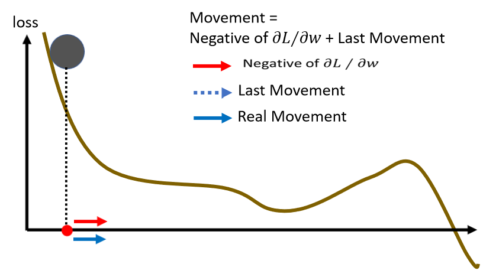
那我们从这个地方开始 Update 参数，根据 Gradient 的方向告诉我们，应该往右 Update 参数，那现在没有前一次 Update 的方向，所以我们就完全按照 Gradient 给我们的指示，往右移动参数，好 那我们的参数，就往右移动了一点到这个地方
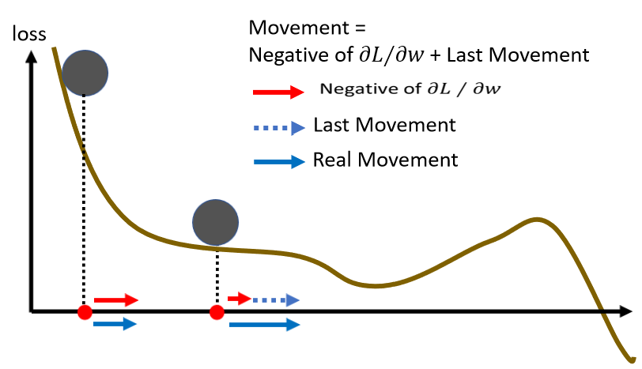
Gradient 变得很小，告诉我们往右移动，但是只有往右移动一点点，但前一步是往右移动的，我们把前一步的方向用虚线来表示，放在这个地方，我们把之前 Gradient 告诉我们要走的方向，跟前一步移动的方向加起来，得到往右走的方向，那再往右走 走到一个 Local Minima，照理说走到 Local Minima，一般 Gradient Descent 就无法向前走了，因为已经没有这个 Gradient 的方向，那走到 Saddle Point 也一样，没有 Gradient 的方向已经无法向前走了
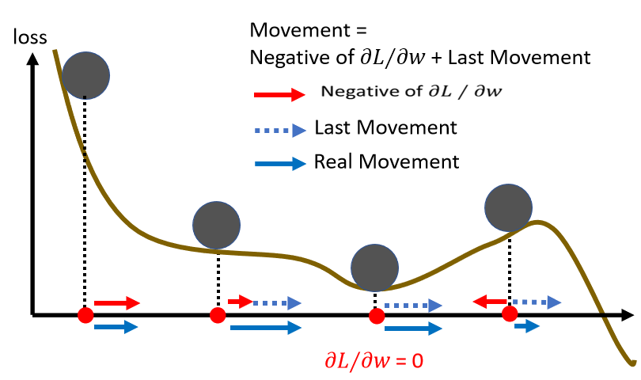
但没有关系，如果有 Momentum 的话，你还是有办法继续走下去，因为 Momentum 不是只看 Gradient，Gradient 就算是 0，你还有前一步的方向，前一步的方向告诉我们向右走，我们就继续向右走，甚至你走到这种地方，Gradient 告诉你应该要往左走了，但是假设你前一步的影响力，比 Gradient 要大的话，你还是有可能继续往右走，甚至翻过一个小丘，搞不好就可以走到更好 Local Minima，这个就是 Momentum 有可能带来的好处
Concluding Remarks¶
- Critical points have zero gradients.
- Critical points can be either saddle points or local minima.
- Can be determined by the Hessian matrix.
- Local minima may be rare.
- It is possible to escape saddle points along the direction of eigenvectors of the Hessian matrix
- Smaller batch size and momentum help escape critical points.
本文总阅读量次